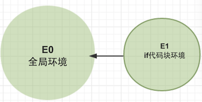
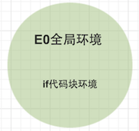

python 变量作用域#
作用域#
作用域（scope，或译作有效范围）是名字（name）与实体（entity）的绑定（binding）保持有效的那部分计算机程序。不同的编程语言可能有不同的作用域和名字解析
- 静态语言（
C、Java、C#等），动态语言(lua) 具有块级别（block level，包含if、while、for、switch、函数等）的变量作用域； - 动态语言(
Javascript、Python、Ruby)只具有函数级别（function level）的变量作用域
lua块级作用域演示:
local function t1( ) if true then local i=1 print("block value",i) end print("has value:",i) end t1() --[[ block value 1 has value: nil ]]
在执行 if 代码块时，会新创建一个环境（称为E1，其外围环境为全局环境E0。见下图），然后在 E1 中定义变量i，在 if 代码块结束后，E1 这个环境就会被删除，这时 main 函数后面的程序就无法访问 if 代码块的变量了。

而python中没有块级作用域,if代码块和全局环境共用
def t1(): if True: i=1 print("block value",i) print("has value:",i) t1() ''' ('block value', 1) ('has value:', 1) '''

变量的动态作用域(dynamic scope)和静态作用域(static scope)#
这里的动态作用域和静态作用域是指的变量作用域，要和静态动态语言区另分来
引用wiki:
静态作用域又叫做词法作用域(lexical scoping)，采用词法作用域的变量叫词法变量。词法变量有一个在编译时静态确定的作用域。词法变量的作用域可以是一个函数或一段代码，该变量在这段代码区域内可见（visibility）；在这段区域以外该变量不可见（或无法访问）。词法作用域里，取变量的值时，会检查函数定义时的文本环境，捕捉函数定义时对该变量的绑定。
相反，采用动态作用域的变量叫做动态变量。只要程序正在执行定义了动态变量的代码段，那么在这段时间内，该变量一直存在；代码段执行结束，该变量便消失。这意味着如果有个函数f，里面调用了函数g，那么在执行g的时候，f里的所有局部变量都会被g访问到。而在静态作用域的情况下，g不能访问f的变量。动态作用域里，取变量的值时，会由内向外逐层检查函数的调用链，并打印第一次遇到的那个绑定的值。显然，最外层的绑定即是全局状态下的那个值。
- 大多数现在程序设计语言都是采用静态作用域规则，如C/C++、C#、Python、Java、JavaScript、Lua
- 采用动态作用域的语言有Pascal、Emacs Lisp、Common
Lisp（兼有静态作用域）、Perl（兼有静态作用域）。C/C++是静态作用域语言，但在宏中用到的名字，也是动态作用域。
// start pseudo-code var y = "global"; function print_y() { console.log(y); } function test_scope() { var y = "local"; print_y(); } test_scope(); // statically scoped languages print "global" // dynamically languages print "local" print_y(); // all languages should print "global" // end pseudo-code
上面的js代码是statically scoped所以print_y中的y在运行前已经确定了值为全局变量global,在test_scope中重新定义var y = "local"并不能改变print_y作用域的y值。所以输出是两个global.
如果换作是Lip这样的dynamic scope情况会发生变化:test_scope中的重新定义会在运行时才确定print_y中的y值,最终会输出local,global
python 静态作用域:
y = "global" def print_y(): print(y) def redefine_y(): y="local" print_y() redefine_y() print(y) ''' global global '''
lua 静态作用域:
local y ="gloal" local function print_y( ) print(y) end local function redefine_y( ) local y = "local" print_y() end redefine_y() print(y) --[[ global global ]]
(变量提升)hoisting#
x = 2 def foo(): print (x) x = 5
上面的python代码按我们的正常思维会输出2，实际上会报错UnboundLocalError: local variable 'x' referenced before assignment
这种行为和javascript的Hoisting(变量提升)有点类似.
我们可以来看一段js代码:
var x = 2; function foo(){ console.log(x); var x = 5; }
按正常的逻辑来说这段代码会输出2才对,然而并没有,输出是undefined
上面的代码发生了什么:
var x = 2; function foo(){ var x // 变量提升 console.log(x); var x = 5; }
其实是因为没有块级作用域时变量声明会提前到函数第一行,而按变量域搜索路径局部变量的x优先级高了var x=2所以会出现这种情况。python的行为也是同理
hositing设计的初衷:
这要追溯到 Javascript 语言设计者的初衷了，Brendan Eich 在创造这门世界级语言时，一开始打算用 Scheme 的思想来实现，而且当时 Brendan 也是在看 SICP 这本书，SICP 4.1.6 在介绍内部定义时，给出了解决变量同一时刻定义的一种解决方式：将所有的变量名提前。这样同一环境中的其他地方就能够使用所有的定义了。需要注意的是，这里只是将变量名提前，赋值的动作不变，显然，Javascript 采用了这一思想（这其实是forward_declaration 技术的一种实现手段）
Python 中的变量作用域#
准确来说，Python 里面有四种作用域：function, module, global和 class 作用域。由于 Python 不区分变量的声明，所以在第一次初始化变量时（必须为赋值操作）将变量加入当前环境中。如果在没对变量进行初始化的情况下使用该变量就会报运行时异常，但如果仅仅是访问（并不赋值）的情况下，查找变量的顺序会按照 LEGB 规则 (Local, Enclosing, Global, Built-in)
python能够改变变量作用域的代码段是def、class、lamda
s = "hello" def foo(): s += "world" return s foo() # UnboundLocalError: local variable 's' referenced before assignment
由于在函数 foo 中在没有对 s 初始化的情况下使用了该值，所以这里会报异常，解决的办法就是使用 global 关键字：
s = "hello" def foo(): global s s += " world" return s foo() # return "hello world"
但由于 global 关键字只能限定在global作用域内查找变量，在有嵌套定义的时候就有问题了，比如：
def foo(): s = "hello" def bar(): global s # NameError: global name 's' is not defined s += " world" return s return bar foo()()
Python 3 中引入了 nonlocal 关键字来解决这个问题，：
def foo(): s = "hello" def bar(): nonlocal s s += " world" return s return bar foo()() # return "hello world"
在 Python 2 中，我们可以通过引入一可变容器解决（其实就是绕过直接修改 s 的值）
def foo(): s = ["hello"] def bar(): s[0] += " world" return s[0] return bar foo()() # return "hello world"
类级别作用域#
class Foo(object): username = "Foo" def say_hello(self): print "Hello %s" % username foo = Foo() foo.say_hello() # NameError: global name 'username' is not defined
username是定义在Foo类级别的，内部的say_hello方法在查找自由变量username的作用域会按照上面说的LEGB 规则 (Local, Enclosing, Global, Built-in)，并不会去查找类级别作用域的变量，所有这里会报错。修改的方法也很简单：
def say_hello(self): print "Hello %s" % Foo.username
可以看到，Python 在试图省略掉变量声明的同时，反而造成了更复杂的情况，相关讨论在 Python mail-list 里面讨论也很火热，有兴趣的读者可以参考：
- PEP 3104 — Access to Names in Outer Scopes
作用域演示#
name = "global name" class Man(object): name = "class name" """docstring for Man""" def __init__(self): super(Man, self).__init__() self.name = "self name" def sayName(self): print(Man.name) print(self.name) # print(name) name= "local name" print(name) def doaction(): man = Man() man.sayName() print(name) doaction() ''' class name self name local name global name '''
闭包#
function add(x) { return function(y) { return x + y; } } var add3 = add(3); alert(add3(4)); // return 7
这里的add3就是一闭包对象，它包括两部分，一个函数与声明函数时的环境。这就是闭包的核心，没有任何神奇的地方，闭包就是解决自由变量变量作用域的问题。
参考:
https://en.wikipedia.org/wiki/Scope_(computer_science)
https://segmentfault.com/a/1190000003114255
http://liujiacai.net/blog/2016/05/28/scope-closure/
http://www.cnblogs.com/isaboy/p/javascript_function.html
http://magicalboy.com/python-scope-legb/
https://blog.mozilla.org/webdev/2011/01/31/python-scoping-understanding-legb/